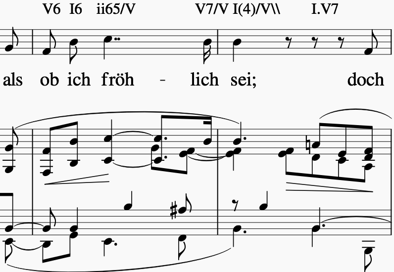
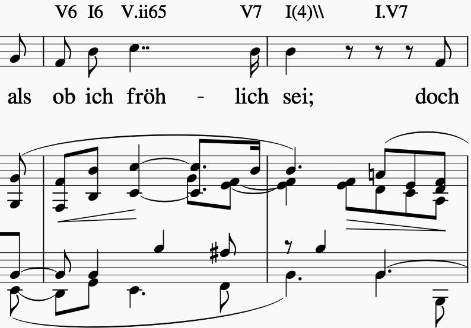
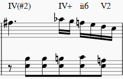
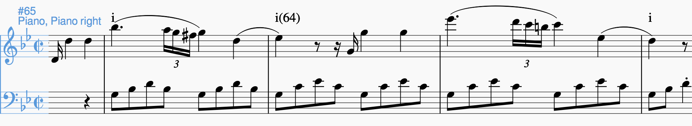

The syntax¶
Every symbol must have at least one compulsory Roman numeral and may start with an indication of key, followed by a separating dot. Such an indication sets the context for the (compulsorily) attached Roman numeral and for all subsequent symbols up to the next indication of key.
Indication of key.¶
The first symbol written in a score always starts with the absolute indication of the entire piece’s tonality.
Simply type the tonic’s note name {A/a,B/b,C/c,D/d,E/e,F/f,G/g(#/b)} within two dots. Remember that symbols starting with a note name have to be preceded by a dot. Examples:
.f#.ifor the first harmony of a piece in F sharp minor;.Ab.Ifor the first harmony of a piece in A flat major; both pieces beginning with the tonic harmony.All other indications of key (i.e. ‘local keys’) are entered as Roman numerals relative to that.
Example 1: As soon as a piece in C major modulates to G major, you can indicate the new key by typing
V.Iover the harmony of G major. All subsequent Roman numerals up to the next indication of key relate to the new key of G major. Note that altered scale degrees beginning withbsuch as.bVII.have to start with a leading dot becausebis a note name.There is a way of annotating secondary dominants (see relative key); however, if you find a
V/vichord and the music then stays in the key ofvifor a longer time (cf. next paragraph), you can writevi.Vright away. Every followingisymbol designates the new tonic.
Important I6 ii65/V V7/V V and I6 V.ii65 V7 I (see example
below), in general, have the same meaning but a preference has to be
given either to the first version - i.e., with applied chords - or
to the second -i.e., with change of local key. In principle, it is
an objective of your analyses to include a bigger picture of a piece’s
tonality through exactly this kind of choices. This means that upon
making such a choice, you need to include the broader context: * If the
example passage is a mere tonicization of V followed by a return to
the original tonic, that is a case for the version with applied chords
because the local key stays the same. * In the special case, that this
would be a cadence to V, followed by a return to the original tonic,
you should even opt for I6 ii65/V V7/V I/V (NB I/V has the
same meaning as V) because an Authentic Cadence should always end
with some sort of tonic symbol. * If, on the other hand, the music
continues in the key of V, the second option should be chosen. The
general rule is that, in such a modulation, the change of local key
should be annotated as early as consistently possible; so you could even
write V.IV6 ii65 V7 I.
Note that the key indications of applied chords always relate to the local key (see the following section). So, if the Schumann example below was not in E major but in A major instead, the same harmonic progression would be standing in the key of V: [V.]``I6 ii65/V V7/V I(4)/V`` with the applied notation remaining unchanged (
/V) because it is relative to the local key; whereas the change of local key would indicate the absolute key instead: [V.]``I6 II.ii65 V7 I(4)``
Wanted annotation |
Unwanted annotation |
|---|---|
 |
 |
mm. 4-5 from Schumann’s “Wehmut”, Liederkreis op. 39/9
The rationale behind this logic can be seen in these automated key analyses of two different annotations of the same piece:
With too many changes of local key |
After correction |
|---|---|
|
|


Gantt chart showing the local keys in the first movement of Mozart’s piano sonata F major, K. 533
Relative key¶
If a symbol relates to a different key than the one you are in, you can
indicate the relative key using a slash /. Most prominently this is
the case for secondary dominants such as V65/IV. The relative key is
indicated as relative to the local key and does not change the local
key. E.g.: iv.i #viio6 i6 V65/iv iv viio7/V V7 i (see below)
designates a cadence in the key of iv (here: G minor) because of the
initial indication of key. Note that * the relative keys iv (C
minor) and V (D major) relate to the local key iv and not to
the global (tonic) key (here: D minor); * viio7/V is not spelled
#viio7/V although the bass is altered. The reason is that it is the
natural 7th scale degree in the key of V (D major). B flat, of
course, is not natural in D major but is clearly annotated through the
choice of viio7 rather than vii%7. * combining relative key
with a modulation can be counterintuitive because relative keys relate
to the local key, whereas key indications
used for modulation always relate to the global key. A theoretically
correct but illegible and non-sensical variant of the example annotation
would be iv.i #viio6 i6 V65/iv vii.i #viio7/ii V7/v iv.i To avoid
confusion, don’t use relative key annotation if a modulation to that
same relative key follows.
Relative keys of relative keys can be annotated, for example the
dominant of the dominant of the dominant: V7/V/V.
Roman numerals¶
The smallest possible symbols consist of a single Roman numeral. They
stand for a major (I, II, III, IV, V, VI, VII) or minor
(i, ii, iii, iv, v, vi, vii) triad in root position. All other
chords - those which are no major or minor root position triad on one
of the key’s natural degrees - need additional symbols. For altered
scale degrees simply use [.]b/#+[Roman numeral], e.g. .bVI for
an Ab major chord in the context of C major; or #vi for an A minor
chord in the context of C minor. Remember the leading dots if b
appears at the beginning of a symbol (V/bVI works but bVI not!).
You always indicate the chord type before the inversion.
Triads¶
Every triad symbol must indicate the [type of triad] and its {inversion} if it is one.
Other than major triads (
I) and minor triads (i) the syntax provides the symbolofor diminished triads (e.g.viioin the major or#viioin the minor) and the symbol+for augmented triads (e.g.I+). Summary:major: uppercase numeral
minor: lowercase numeral
diminished: lowercase numeral +
oaugmented: uppercase numeral +
+Inversions are annotated by adding
6or64(NOT46) to the triad type. Examples:ii6in major context,iio6in minor contextviio6in major context,#viio6in minor contextI64for a passing 64 chord on scale degree ^5 (as opposed to a dominant with 64-suspension, see below)I+6as a shorthand for V6/IV with augmented fifth (relative to the root, see below).
Tetrads¶
All tetrads are annotated as springing from a seventh chord. Therefore,
every tetrad must indicate the [type of seventh chord] AND, for example,
a 7 for root position OR 65 43 2 for the three possible
inversions.
The possible types of root position seventh chords are:
diminished seventh: lowercase numeral +
o7, Examples:#viio7 iio65half-diminished seventh: lowercase numeral +
%7, e.g.viio%7 ii%43augmented (minor) seventh: uppercase numeral +
+7, e.g.V+7augmented major seventh: uppercase numeral +
+M7, e.g.V+M7mm7 (minor seventh): lowercase numeral +
7, e.g.ii7 i2mM7 (minor with major seventh): lowercase numeral +
M7, e.g.ivM7(although, in most cases, such a chord will be annotated as a retardation of 8, see below)MM7 (major seventh): uppercase numeral +
M7, e.g.IVM7 IIIM65Mm7 (dominant seventh):
V7. Theoretically, it could appear on other degrees than V, e.g. in a falling fifths progression:i iv7``VII7``IIIM7 VIM7 ii%7 V7 i- but in such a case, where the respective tonic follows, it will be annotated as (secondary) dominant:i iv7``V7/III``IIIM7 VIM7 ii%7 V7 i. However, there are cases where the same sonority occurs asIV7orIV65in a minor key, which will not be notated as a dominant.The respective inversions are annotated by replacing
7with65(NOT56),43(NOT34) or2respectively.There are special symbols to annotate the French, German and Italian sixth chords:
.Fr,.GerandIt6. The latter actually does not need an initial dot because it does not start with a note name.
Suspensions and retardations¶
Suspensions and retardations are annotated as arabic numbers within
round parantheses () following the Roman numeral. The numbers
designate the note’s interval to the root. That is to say a
suspensional 4 is marked as (4) in any inversion:
V(4) V6(4) V65(4) V43(4) V2(4) (yes, two of them have the suspension
in the bass). It implies, that the functional third of the chord (i.e.,
the third above the root) is not present. In order to indicate the
resolution, write the sounding chord without the suspension, e.g.
V65(4) V65 or V(4) V7. If an interval is altered, add #/b in
front of the digit, e.g. V7(b6) V7, which is possible only in a
major context because in minor, the 6th would already be flat. If
several suspensions are sounding at the same time, annotate all of them
within the same parenthesis and always in descending order, e.g.
V(64). A cadenza doppia could look like V7 V(64) V(4) V
followed by I or i.
The digits stand for * (2): Suspension over the root, meaning that
the root is not present in the chord; as opposed to * (9):
designating the same pitch but indicating that the root is present
at the same time; * (4): Suspension over the third * (6):
Suspension over the fifth * (7): Retardation of the root, i.e. the
resolution goes upwards * (#``N``): digit N is a
retardation resolving upwards, e.g. (#2) retarding the third. The
# overrides the rule that you use (2) only if the root is not
present. * (b``N``): digit N is a suspension resolving
downwards > Attention! Designating suspensions or retardations as
intervalls above the root will be counterintuitive if you are used to
thinking in figured bass. For example, a falling fauxbourdon
ii6 I6 viio6 with 7-6 suspensions has to be written as
ii6(2) ii6 I6(2) I6 viio6(2) viio6. Note that you use (2) and
not (9) because the root is not present. > Other than what some
would typically write, a Classical retardated ending looks like
i(9#74) i, and not i(#742) i or i(24#7) i.
Added notes¶
Generally, there are only very few notes in the Common practice era which cannot be explained as suspensions or retardations. > One should add that we don’t annotate neighbour notes, passing notes nor embellishments.
A typical additional note would be that of a pedal note which appears in
a different voice than the bass. In this case, you would annotate the
additional note - analogue to a suspension - as a digit indicating the
interval from the root in parenthesis, but preceded by a +.
Example: Imagine a C major context and a pedal on G in some middle
voice. Around that, the other voices do the progression
I viio6 I6 ii6 I64 IV6 .Ger6 V\\: Some harmonies contain the G and
do not change (namely I, I6, I64 and V), one harmony
supports an added G (viio6 with G is V43) and the rest neither
support G nor can it be interpreted as suspensions. So the correct
annotation would be I V43 I6 ii6(+4) I64 IV6(+2) .Ger6(+7) V\\.
Sometimes, it can seem ambiguous whether a note is an added note, a suspension without resolution or an embellishment (anticipation). The following example from Monteverdi’s Lamento della ninfa might give a hint how to differentiate.
Compare the first halves of mm. 40, 41 and 44. The B in m. 41 is
interpreted as an embellishment (incomplete neighbour) although it could
be seen as part of a iio43. The B in m. 40, however, is interpreted
as being more than just an embellishment (anticipation) because it is
more pronounced. However, unlike in m. 44, the B is neither prepared nor
resolved and therefore it is annotated as added note, i.e. i(+9),
rather than as a suspension i(9).
Phrase endings¶
The annotation of phrases consists in a separate annotation standard which
can be used alongside with the harmony annotations. For that it is important
to remember, that phrase annotations are always the label’s last part.
Curly brackets {} are used for annotating phrases. For example, the first
phrase of a piece could begin with the label .C.I{. The closing bracket }
always marks the structural ending of a phrase - typically the target chord of a
cadence, e.g. I}.
It has proven useful to listen to your completely annotated score once again just to detect phrase endings and cadences.
Note that many cadences and other structural endings are followed by an
appendix or some transitional codetta, which is alwas the part between the
structural ending marked with } and the next beginning {. Curly brackets
can stand alone (i.e. don’t have to be preceded by a label) and can fall together
in the case of phrase interlocking: }{.
Corelli: Sonata da chiesa op. 1/7, I, mm. 1-4¶
Pedal points (Organ points)¶
If several harmonies appear over the same bass note, the start of the
pedal point is marked by [ and the end by ]. In front of the
opening [ stands the Roman numeral corresponding to the bass note’s
scale degree, immediately followed (within the same expression!) by the
first harmony above the bass note. Thus, the most common pedal points
start with I[I, i[V7/iv or V[V. The pedal point ends at the
end of the terminal symbol’s duration, i.e. it ends with the next symbol
after I] or V7].
The two criteria must apply for using the pedal-point annotation: * if it involves three or more distinct harmonic events sharing the same bass note * at least one harmony appears of which the pedal note is not a component.
Therefore, a 5/3-6/4-5/3 contrapuntal movement (often on scale degree 1)
is generally annotated as a simple neighboring motion over a pedal
point: I I(64) I (in other words, the information that we are
confronting a pedal-point motion is implied in this expression).
Example |
Explanation |
|---|---|
 (KV 333, II, 19) |
No pedal point because the bass is a constituent of every harmony. |
 (KV 333, III, 65-8) |
This is considered a mere i i(64) i prolongation (only two distinct events). |
If you think about it, if you want to write the simple progression
I I(64) I as an organ point, you’re left with four different
possibilities, depending on whether or not you include the bass note in
the harmonies above it: * I[I IV I] or * I[I IV64 I] or *
I[I6 IV I6] or * I[I I(64) I]
This question occurs for nearly every organ point you will come to
write. A rule of thumb is: If the bass note is a part of the harmony,
you write the inversion corresponding to the bass note; otherwise, the
inversion of the chord above. But, more importantly, another rule can
override this: The harmonic progression above the organ point should be
meaningful in itself. For example, if there is a fauxbourdon, you might
not want to include the bass note but highlight the sixth chords:
I[IV6 iii6 ii6 I6 viio6 I] rather than
I[IV64 iii6 ii6 I viio6 I]
If you change the local key, you need to end the pedal point with the previous label and start a new one. (e.g.
WWV096-Meistersinger_01_Vorspiel-Prelude_SchottKleinmichel.mscx, mm. 33f.)
Ambiguity¶
If two interpretations are possible and you are unable to make a
decision, you can give both interpretations by separating them with a
dash -, e.g. viio6-V43. Use this means as a last resort only and
make sure that both interpretations are valid readings within their
context, i.e. if you read each interpretation in line with the prior
and the following symbol. This implies that no modulation can occur
within an ambiguous expression (such as viio7/V-v.#viio7) because
only one of the readings can be correct in context with the following
expression. It is possible to give a relative key (e.g. I6-V6/IV)
because both options create correct readings.
Unisono¶
Single voice passages generally imply harmonies which you are asked to
infer. If the information of the melody line is too sparse to be sure
whether it is implying viio6 or V43, for example, you will most
likely opt for an ambiguous annotation. However, in such a case, you are
also free to choose one interpretation because it is more stereotypical
than the other or because it alludes to another passage of the same
piece. If no harmony can be inferred - in particular where a composer
deliberately withdraws tonal footing - use the symbol @none.